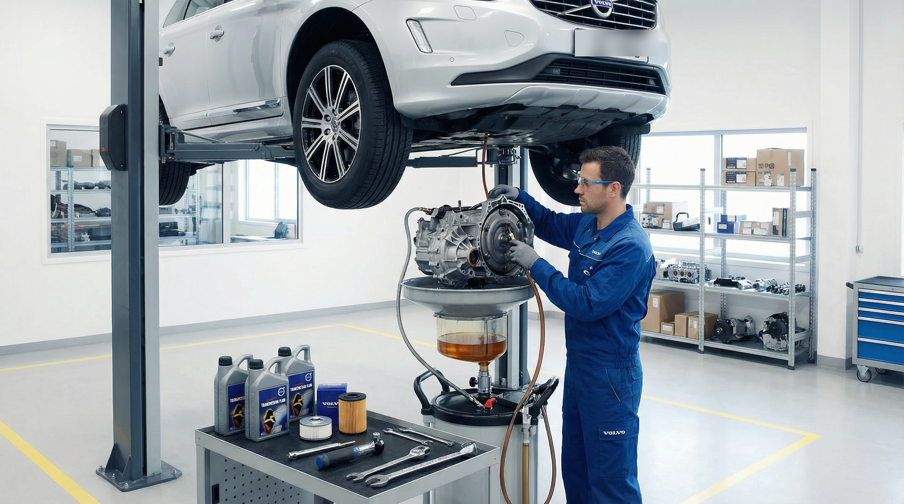

Обслуживание муфты Haldex на Volvo: регламент, признаки поломки и замена масла

Система полного привода AWD на современных автомобилях Volvo (XC90, XC60, XC70, V90 Cross Country) обеспечивает эталонную стабильность на зимней дороге и мокром асфальте. Её ключевой узел — электрогидравлическая муфта Haldex (на моделях после 2013 года преимущественно Haldex 5-го поколения). Несмотря на заверения некоторых сервисных мануалов о том, что масло залито «на весь срок службы», реальный опыт обслуживания Volvo в условиях Москвы показывает: без регулярной профилактики муфта выходит из строя задолго до пробега в 100 000 км.
Как устроена муфта Haldex 5 и почему она уязвима?
В отличие от 4-го поколения, где присутствовал отдельный сменный масляный фильтр и гидроаккумулятор, в муфте Haldex 5 инженеры максимально упростили конструкцию. Необходимое давление сжатия пакета фрикционов теперь создается исключительно за счет изменения оборотов электронасоса.
При каждом подключении полного привода фрикционные диски слегка проскальзывают, выделяя микрочастицы графита и металла. В 4-м поколении эту грязь задерживал отдельный фильтр. В 5-м поколении фильтра нет — вместо него на заборнике насоса установлена лишь мелкая сетка.
В результате продукты износа смешиваются с трансмиссионной жидкостью, образуя плотный масляный налет (желеобразную субстанцию), которая плотно забивает сетку насоса.
Что происходит, если не менять масло в Haldex?
- Масляное голодание насоса: через забитую сетку насос не может прокачать нужный объем жидкости для создания рабочего давления.
- Перегрузка электродвигателя: блок управления DEM видит падение давления и заставляет электронасос работать на предельных оборотах. Моторчик греется и в итоге сгорает.
- Отказ полного привода: автомобиль внезапно становится сугубо переднеприводным, теряя устойчивость на скользком покрытии.
Главные симптомы неисправности полного привода Volvo
- Пробуксовка передних колес при старте: на светофоре или на снежной каше передние колеса срываются в букс, а задняя ось подключается с заметным ударом или не подключается вовсе.
- Толчки при медленном развороте: при максимальном вывороте руля на малой скорости ощущаются легкие подергивания в задней части кузова.
- Сообщение на панели приборов: «AWD требует обслуживания» или «Anti-Skid временно отключена».
- Ошибки при диагностике сканером VIDA: ошибки блока DEM по току насоса или несоответствию давления (DEM-P188914, DEM-P096162).
Регламент и технология правильного обслуживания в VL Prime
Специалисты нашего профильного техцентра рекомендуют проводить обслуживание муфты Haldex каждые 30 000 – 40 000 км пробега (или один раз в 2 года).
Важно понимать: простая замена масла методом «слил-залил» не решает проблему! Сливая жидкость через пробку, вы оставляете всю грязь на сетке насоса. Правильный регламент обслуживания включает следующие этапы:
- Слив отработанной жидкости из корпуса муфты.
- Обязательное снятие электронасоса: очистка и промывка заборной сетки и крыльчатки насоса от масляного шлама.
- Промывка внутренней полости муфты очистителем под давлением.
- Замена уплотнительных колец насоса на новые оригинальные.
- Монтаж насоса с соблюдением момента затяжки болтов.
- Заливка оригинального масла для муфт Haldex (Volvo 31367940) по уровню контрольной пробки.
- Калибровка насоса: через диагностический комплекс Volvo VIDA запускается процедура адаптации насоса и сброса счетчика старения масла в блоке DEM.
Сколько стоит профилактика vs замена насоса?
Регулярная замена масла с промывкой сетки насоса стоит в 5–7 раз дешевле, чем покупка нового оригинального насоса Haldex и его замена. Своевременное ТО занимает всего 1–1.5 часа и гарантирует, что полный привод не подведет вас в самый ответственный момент.
Проверьте полный привод вашего Volvo перед сезоном
В техцентре VL Prime в Москве мы выполняем полный комплекс диагностики муфты Haldex, проверку токов насоса через VIDA и регламентное обслуживание с оригинальными спецжидкостями.
Записаться на обслуживание Haldex